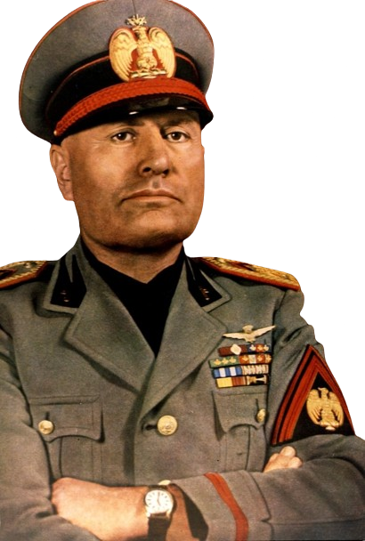

Kim Jong-un (en chosŏn'gŭl, 김정은; en hancha, 金正恩; pronunciado /kim
dʑʌŋɯn/; Pionyang, 8 de enero de 1984) es un político, dirigente y
dictador norcoreano3 que ha sido el líder supremo de la República
Popular Democrática de Corea desde 2011 y líder del Partido del Trabajo
de Corea desde 2012. Es el tercer hijo de Kim Jong il, quien fue el
segundo líder supremo de Corea del Norte entre 1994 a 2011, y nieto de
Kim Il Sung, el fundador y primer líder supremo del país. Kim Jong-un
asumió oficialmente la Comandancia Suprema del Ejército Popular de Corea
del Norte, después del funeral estatal de su padre acaecido el 28 de
diciembre de 2011. Kim tenía los títulos de secretario general del
Partido del Trabajo de Corea, Era Presidente de la Comisión Militar
Central, presidente de la Comisión de Defensa Nacional, comandante
supremo del Ejército del Pueblo Coreano y miembro del Presidium del
Comité Permanente del Politburó del Partido del Trabajo de Corea.
Educado en Berna (Suiza), habla inglés y alemán, y desde el 27 de
septiembre de 2010 poseía el rango de general de cuatro estrellas.Es
considerado por la mayoría de países, organizaciones y medios de
comunicación del mundo como un dictador, los cuales no se refieren a él
por sus cargos oficiales. Otros países, organizaciones y medios de
comunicación prefieren referirse al mismo meramente como líder o por su
rango de mariscal. Era el cuarto y último hijo de Kim Jong-il con su
tercera y última pareja, Ko Young-hee. El 14 de abril de 2012 fue
elegido por la Asamblea Popular Suprema como presidente de la Comisión
Nacional de Defensa de Corea del Norte. Kim gobierna Corea del Norte
como un estado totalitario, y su liderazgo ha seguido el mismo culto a
la personalidad que su padre y su abuelo. En 2014, un informe del
Consejo de Derechos Humanos de las Naciones Unidas sugirió que Kim
podría ser juzgado por crímenes contra la humanidad. Ordenó la purga y
ejecución de varios funcionarios norcoreanos, entre ellos se cree que
ordenó el asesinato de su medio hermano, Kim Jong-Nam, en Malasia en
2017. presidio una expansión de la economía de consumo, proyectos de
construcción y atracciones turísticas en Corea del Norte. Kim amplió el
programa de armas nucleares del país, lo que provocó un aumento de las
tensiones con Estados Unidos y Corea del Sur, así como con China. En
2018 y 2019, Kim participó en cumbres con el presidente surcoreano, Moon
Jae-in, y el presidente estadounidense, Donald Trump, lo que llevó a un
breve deshielo de relaciones entre Corea del Norte y los dos países,
aunque las negociaciones finalmente se rompieron sin avances en la
desnuclearización. Afirmado el éxito en la lucha contra la pandemia de
COVID-19 en Corea del Norte, ya que el país no informó de ningún caso
confirmado hasta mayo de 2022, aunque muchos expertos dudan de esta
afirmación.
Dictadores Venezuela
A los 12 años, Maduro ya militaba en una organización de izquierda,
llamada Ruptura. Posteriormente, ingresó en la Liga Socialista, un año
después del asesinado en manos de la Dirección de los Servicios de
Inteligencia y Prevención del dirigente del partido Jorge Antonio
Rodríguez en 1977. Dentro del partido llegó a ser miembro del Comité
Nacional de la Liga Socialista y del Comité Regional de Caracas. También
trabajó como guardaespaldas de José Vicente Rangel durante la
infructuosa campaña presidencial de Rangel en elecciones de 1983. Luego,
durante los años 1986 y 1987, cursó estudios en la escuela cubana de
formación de cuadros políticos de izquierdas «Ñico López» en la ciudad
de La Habana, gracias a una beca otorgada por su partido. A
finales de la década de los 80 consigue trabajo como conductor de
metrobús en el Metro de Caracas, en la parroquia Caricuao, donde
residía. Durante su labor como conductor, pasa de ser un sindicalista no
oficial que representaba a conductores de autobuses del Metro de
Caracas, aunque posteriormente sería fundador del Sindicato de
Trabajadores del Metro de Caracas (SITRAMECA).De acuerdo con el propio
Maduro, se había hecho sindicalista por una «decisión estratégica» de su
partido la Liga Socialista. En 1995 funda junto a otros trabajadores
sindicalistas de la Fuerza Bolivariana de Trabajadores, organización de
la que se convirtió en Coordinador Nacional. Maduro conoció a Hugo
Chávez luego del primer intento de golpe de Estado de Venezuela de 1992,
aunque no se conocerían personalmente hasta casi dos años después. Desde
ese momentro Maduro se convirtió en su seguidor, y junto a la Liga
Socialista y otros grupos de izquierda como Bandera Roja participó en el
acompañamiento civil al segundo intento de golpe de Estado de Venezuela
de 1992 del mismo año. Maduro se encargó de movilizar soldados y civiles
armados por los túneles del metro durante la intentona golpista. Por
esos mismos túneles logró escapar de ser arrestado una vez frustrado el
golpe.
Dictadores Italia

Benito Amilcare Andrea Mussolini (Predappio, 29 de julio de
1883-Giulino, 28 de abril de 1945), conocido como Benito Mussolini, fue
un político, militar y dictador italiano, líder del Partido Nacional
Fascista y del Partido Fascista Republicano; y presidente del Consejo de
Ministros Reales de Italia desde 1922 hasta 1943. Posteriormente fue
Duce —guía— de la República Social Italiana desde 1943 hasta 1945, año
de su fusilamiento. Mussolini estableció un régimen totalitario durante
el período conocido como fascismo italiano, bajo el beneplácito del rey
Víctor Manuel III, hasta su colapso en la Segunda Guerra Mundial.
Afiliado al Partido Nacional Fascista durante la mayor parte de su vida
política, Mussolini lideró el Partido Fascista Republicano entre 1943 y
1945, siendo este el último partido político al que perteneció. Previo a
su afiliación al Partido Nacional Fascista, Mussolini fue expulsado en
1914 del Partido Socialista Italiano, partido del que había sido
integrante a comienzos del siglo xx, por sostener posturas nacionalistas
irredentistas contrarias al internacionalismo de los principales líderes
socialistas. En 1922, ya afiliado al Partido Nacional Fascista y como
líder del mismo, organizó la Marcha sobre Roma, tras cuya victoria fue
nombrado presidente del Consejo de Ministros. Mussolini obtuvo creciente
apoyo popular mediante la exaltación del panitalianismo, el
expansionismo y el anticomunismo, sirviéndose de su influencia militar
apoyado por la eficiente propaganda fascista y las concentraciones de
masas cargadas de simbolismo. Fue nombrado presidente del Consejo de
Ministros Reales en diciembre de 1922, y por la escasa oposición del rey
Víctor Manuel III, logró disolver el parlamento y asumir así el mando
supremo del Estado itálico. Transformó el Reino de Italia en el Segundo
Imperio Colonial Italiano y gobernó con un partido único basado en el
totalitarismo y la autocracia de la ideología fascista.